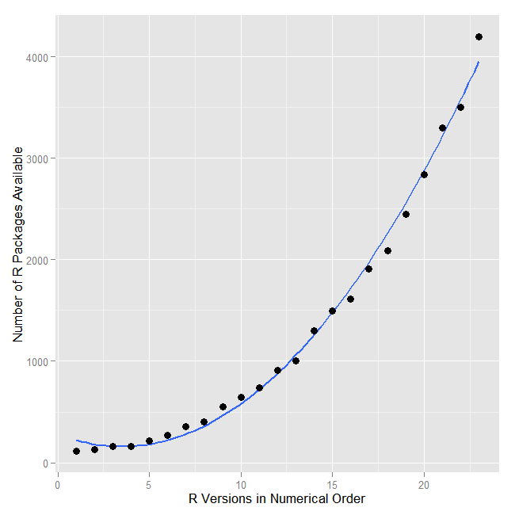
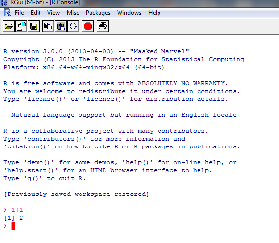
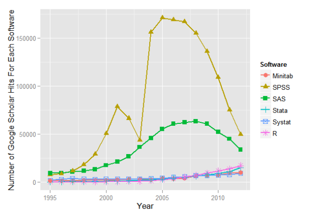
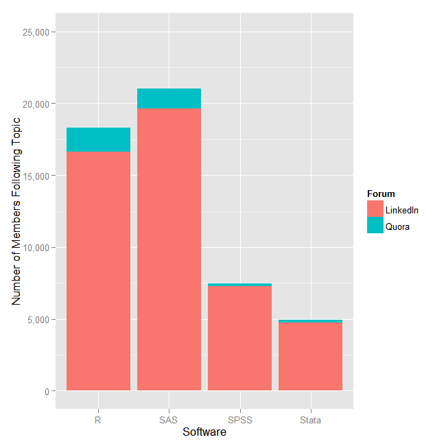
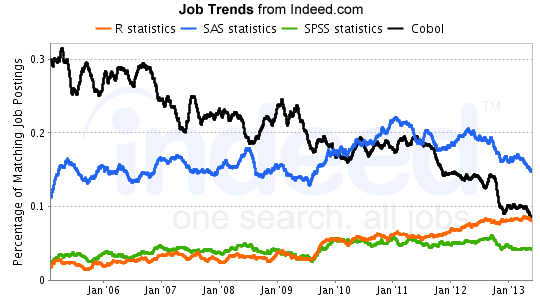
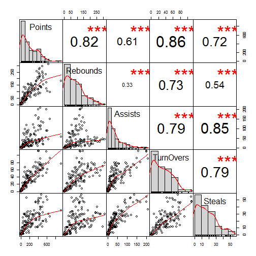
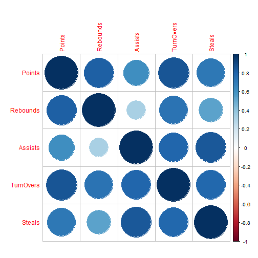
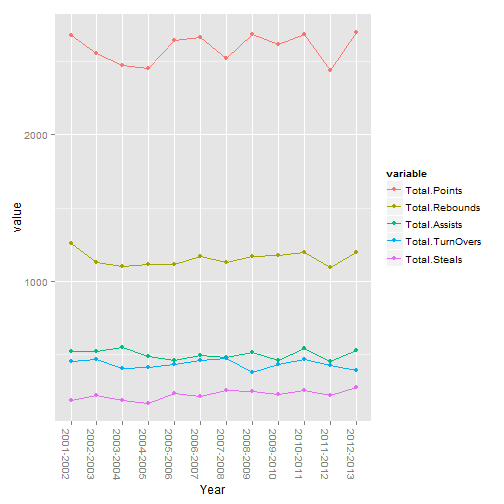
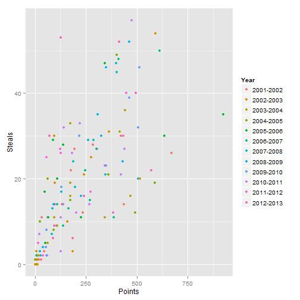
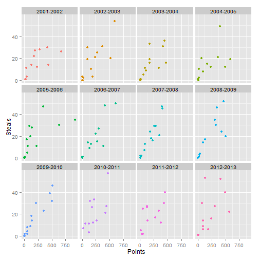

Why R for Data Analysis?
An SPSS/SAS Convert's View
Agenda
-
1. What is R?
2. R versus other softwares
3. My embrace of R and a simple case
What is R?
 |
|---|
-
1. A language and an environment for statistical computing and graphics
2. Based on S - now owned by TIBCO
3. Elegance - Language for statisticians by statisticians

Pluses
- Free and Open Source -No reinvention of wheel and tinkering opportunities
- Coding in R - Reproducibility
- Most new routines appear in R before any other statistical system
 Source: Muenchen, Robert A, The Popularity of Data Analysis Software., Retrieved 8/15/2013
Pluses Continued...
- Graphics - Great.... to ....Mindblowing
- Excellent package distribution system - Internet
- Compatible with most flavors of Unix, Mac OSX, and Windows
- Connectivity with most database systems, languages, applications
- Community support is outstanding - user-base estimates of 250,000-2 million
Limitations
- Command line interface
- Help - IDEs: R Studio, Revolution Analytics and - GUI: Deducer and R Commander
- Provides complete control over what happens but the learning curve could be steep
- Limited commercial support
- Acceptance limited because of limited understanding - e.g., Pfizer

Other Softwares - (SPSS, SAS, Stata,...)
- Proprietory softwares, functions
- Algorithms developed for users - tinkering/customization ability limited
- Rectangular datasets and one at a time
- Expensive and costs escalate for additional options
R versus Others
|  |  |
|---|---|
R versus Others - Jobs
|  |  |
|---|
R Packages in Different Fields
Personal Journey
- Pre-February 2013 - SPSS in Marketing Research and SPSS/SAS in design of Business Analytics
- February 2013 (~ 7 months ago) - MOOC
- April 2013 - R instead of SPSS in Marketing Research
- Blogging
Case Study
load("assets/Seasonstatisticscleaned.rda")
GUstats = subset(Seasonstatistics, Team == "Gonzaga Bulldogs")
dim(GUstats)
## [1] 155 20
names(GUstats)
## [1] "Player" "Minutes"
## [3] "Field.Goals.Made" "Field.Goals.Attempted"
## [5] "Free.Throws.Made" "Free.Throws.Attempted"
## [7] "Three.Point.FieldGoals.Made" "Three.Point.FieldGoals.Attempted"
## [9] "Points" "Offensive.Rebounds"
## [11] "Defensive.Rebounds" "Rebounds"
## [13] "Assists" "TurnOvers"
## [15] "Steals" "Blocks"
## [17] "Year" "Team"
## [19] "City" "Conference"
GUstats = GUstats[c(1, 9, 12:15, 17)]
GUstats[1, ]
## Player Points Rebounds Assists TurnOvers Steals Year
## 3760 Kelly Olynyk 571 235 55 77 22 2012-2013
corrmat = cor(GUstats[c(-1, -7)])
corrmat
## Points Rebounds Assists TurnOvers Steals
## Points 1.0000 0.8173 0.6111 0.8572 0.7171
## Rebounds 0.8173 1.0000 0.3292 0.7324 0.5367
## Assists 0.6111 0.3292 1.0000 0.7912 0.8451
## TurnOvers 0.8572 0.7324 0.7912 1.0000 0.7899
## Steals 0.7171 0.5367 0.8451 0.7899 1.0000
library(PerformanceAnalytics)
chart.Correlation(GUstats[2:6])

library(corrplot)
corrplot(corrmat)

library(healthvis)
pairedVis(GUstats)
library(plyr)
sumcomponents = ddply(GUstats, .(Year), summarize, Total.Points = sum(Points),
Total.Rebounds = sum(Rebounds), Total.Assists = sum(Assists), Total.TurnOvers = sum(TurnOvers),
Total.Steals = sum(Steals))
head(sumcomponents)
## Year Total.Points Total.Rebounds Total.Assists Total.TurnOvers
## 1 2001-2002 2677 1259 522 453
## 2 2002-2003 2558 1127 520 466
## 3 2003-2004 2473 1102 548 404
## 4 2004-2005 2454 1113 486 409
## 5 2005-2006 2643 1118 460 431
## 6 2006-2007 2668 1169 492 462
## Total.Steals
## 1 189
## 2 218
## 3 189
## 4 169
## 5 234
## 6 212
library(reshape2)
library(ggplot2)
GUstatsmelt = melt(sumcomponents, id = c("Year"))
ggplot(GUstatsmelt, aes(x = Year, y = value, color = variable, group = variable)) +
geom_point() + geom_line() + theme(axis.text.x = element_text(angle = -90))

library(rCharts)
hplot = hPlot(value ~ Year, data = GUstatsmelt, type = "line", group = "variable")
hplot$save("hplot.html", cdn = TRUE)
ggplot(GUstats, aes(x = Points, y = Steals, color = Year)) + geom_point()

nvp2 <- nPlot(Steals ~ Points, data = GUstats, group = "Year", type = "scatterChart")
nvp2$xAxis(axisLabel = "Points")
nvp2$yAxis(axisLabel = "Steals")
nvp2$addControls("x", "Steals", names(GUstats))
nvp2$addControls("y", "Points", names(GUstats))
nvp2$addParams(width = 500, height = 400)
nvp2$save("nvdcontrols.html", cdn = TRUE)
ggplot(GUstats, aes(x = Points, y = Steals, color = Year)) + geom_point() +
theme(legend.position = ("none")) + facet_wrap(~Year)

rp2 <- rPlot(Steals ~ Points | Year, data = GUstats, color = "Year", type = "point")
rp2$set(legendPosition = "none")
rp2$addParams(width = 500, height = 500)
rp2$addControls("x", "Steals", names(GUstats))
rp2$addControls("y", "Points", names(GUstats))
rp2$save("rp2.html", cdn = TRUE)
d1 <- dPlot(x = "Steals", y = "Points", data = GUstats, groups = c("Player"),
type = "bubble")
d1$addControls("x", "Steals", names(GUstats))
d1$addControls("y", "Points", names(GUstats))
d1$set(storyboard = "Year")
d1$save("dimple.html", cdn = TRUE)
A Recently Released Video on R
From Revolution Analytics
Final Thoughts and Possible Next Steps
- R and its environment - flexible and powerful
- Benefits to students
- Setup resource center/support group(s) in school/campus
- Financial Incentives??
References, materials borrowed from, and acknowledgements
Revolution Analytics blog
Matthew Keller's Introduction to R ppt
Hadley Wickham: ggplot2, plyr, reshape2
Taiyun Wei: corrplot
Peter Carl & Brian G. Peterson: Performance Analytics
Prasad Patil, Hector Corrada Bravo, Jeff Leek: healthvis
Ramnath Vaidyanathan: rCharts and slidify
JS developers whose work used through rCharts in this deck - NVD3, Highchart, Dimplechart, and Polychart
The tireless developers providing resources in R and its libraries
R Resources listing at my blog: http://analyticsandvisualization.blogspot.com or http://analyticsandvisualization.com
Sources of Images :
John Chambers: http://www-stat.stanford.edu/~jmc4/CopyPhoto.jpg
Ross Ihaka: https://www.stat.auckland.ac.nz/S-Workshop/small-ihaka.gif
Robert Gentleman: https://www.stat.auckland.ac.nz/S-Workshop/small-robert.gif
R: R-Project site
{kind=link}
{kind=link}
{kind=link}